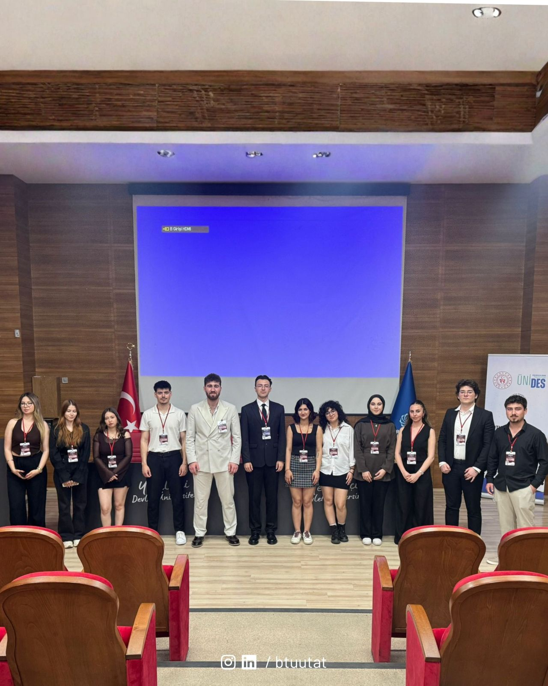

BTÜ Uluslararası Ticaret Topluluğu olarak, T.C. Gençlik ve Spor Bakanlığı ve ÜNİDES destekleriyle hayata geçirdiğimiz BTU TRADE SUMMIT: Küresel Pazarlara Ticaret Zirvesi’ni büyük bir gurur, heyecan ve başarıyla tamamladık. Sektörün vizyoner liderlerini, alanında uzman isimleri ve geleceğin ticaret profesyoneli adayı gençleri aynı çatıda buluşturan zirvemiz, gün boyunca ilham verici oturumlara sahne oldu.
Küresel Pazarlar, İhracat ve Dijital Dönüşüm Panelleri
Zirvemizin ilk panelinde Topluluk Başkanımız Melih AYDOĞAN oturum moderatörlüğünü üstlenerek panelistlerle birlikte küresel ticaretin güncel dinamiklerini ve geleceğini kapsamlı bir şekilde ele aldı.

Oturumlar boyunca ihracatta markalaşma, dijitalleşmenin ticarete etkisi ve yeni nesil pazarlama stratejileri detaylıca masaya yatırıldı:
• İhracat ve Marka Stratejileri: Kınık Maden Suları İhracat Müdürü İlyas KILINÇ ve Kınık Maden Suları Yönetim Kurulu Üyesi Berhan ÇOKUSOĞLU, yerel markaların küresel pazarlara açılma süreçlerini, uluslararası rekabette öne geçme yöntemlerini ve saha tecrübelerini katılımcılarla paylaştı.
• E-Ticaret ve Dijital Dönüşüm: Bursa Ticaret ve Sanayi Odası (BTSO) E-Ticaret ve Dijitalleşme Konsey Başkanı & F2F Bilişim Kurucu Ortağı İlker ÖZGÜVEN, dijitalleşen dünyada geleneksel ticaretin evrimini ve e-ticaret ekosisteminde sürdürülebilir büyüme adımlarını aktardı.

• Yeni Nesil Dijital Pazarlama: Comio Dijital Pazarlama Kurucu Ortağı Mustafa SÖNMEZAY, dijital pazarlama dinamikleri, hedef kitle analizleri ve küresel pazarlama kampanyalarında dikkat edilmesi gereken kritik noktaları örneklendirdi.
• Sektörel Bakış ve Gelecek Vizyonu: Sektörel Danışman Dr. Murat ERDOĞAN, küresel ekonomideki makro trendleri, akademinin ve reel sektörün kesişim noktalarını değerlendirerek gençlere kariyer yolculuklarında rehberlik edecek stratejik tavsiyelerde bulundu.
Plaket Takdimi, Çekilişler ve Kapanış
Yoğun ilgi gören oturumların ve soru-cevap bölümlerinin ardından, etkinliğimize değerli bilgi ve tecrübeleriyle katkı sunan konuklarımıza teşekkür plaketleri takdim edildi. Sürpriz hediyeler ve heyecan dolu çekilişlerle renklenen zirvemiz, günün sonunda tüm katılımcıların bir araya geldiği toplu fotoğraf çekimiyle ölümsüzleştirildi.

BTÜ Uluslararası Ticaret Topluluğu olarak; zirvemizin gerçekleşmesinde emeği geçen tüm ekibimize, bizleri yalnız bırakmayan değerli konuşmacılarımıza, destek sağlayan kurumlarımıza ve yoğun katılım gösteren tüm öğrencilere teşekkür ederiz. Birlikte üretmeye, gelişmeye ve ilham vermeye devam ediyoruz!